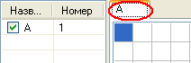
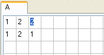
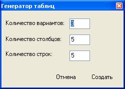

Для создания таблиц нужно:
в ручном режиме:
1. нажать на кнопку "создать таблицу"
2. появившемся окне ввести название таблицы
3. в следующем окне ввода ввести порядковый номер таблицы
4. выбрать страницу с названием таблицы

5. осуществить ввод данных в таблицу на выбранной странице

6. при необходимости повторить действия 1,2,3,4
в автоматическом режиме:
1. нажать на нопку "генерировать таблицы"
2. в появившемся окне ввести необходимые данные

3. нажать кнопку "создать"
Чтобы произвести фильтрацию, когда все данные введены нужно нажать на кнопку
"фильтровать". Программа сама переберет все варианты и отфильтрует полученные комбинации.
Результаты работы будут сохранены в папке с программой в файле Report.txt. Однако, если
нажата кнопка "Экспорт данных в Excel", то кроме записи данных в текстовый файл произойдет
передача данных в Excel c его запуском.
P.S. в папке с программой есть файл АБВ.dat - это сохранёнка программы, содержащая
3 таблицы, по 30 столбцов длиной в 6 строк каждый